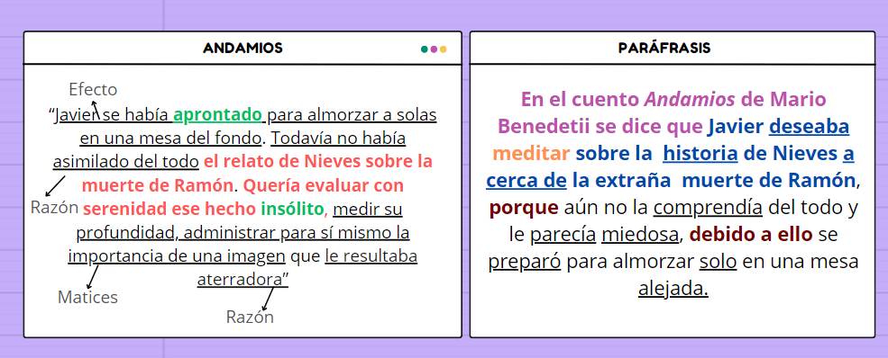

Hemos comentado que vamos a ejercitar la lectura literal mediante la lectura y construcción de paráfrasis sobre un cuento y un ensayo filosófico, sin embargo, antes de realizar tal empresa necesitamos conocer qué es y cómo realizar una paráfrasis. Veamos:
¿Qué es la paráfrasis?
Si seguimos las definiciones del diccionario de la Rel Academia Española, podemos entender la paráfrasis como una técnica de comprensión lectora que consiste en reescribir un texto ajeno en nuestras palabras sin alterar su sentido original. Todo ello con el propósito de hacer dicho texto más fácil de comprender.
¿Cómo realizar una paráfrasis?
Aunque no existe una sola manera de hacer paráfrasis, a continuación vamos a presentar solo una forma de realizarla , ello con el fin de ser más claros en la exposición.
Así pues, apoyándonos en Romero (2020) y Ariza (2020), podemos señalar los siguientes puntos a tener en cuenta para redactar una paráfrasis:
1. Leer detenidamente lo que se va a parafrasear.
Imaginemos que tenemos el siguiente párrafo a parafrasear.
Deberíamos leerlo por lo menos dos veces intentando comprender lo que se dice en dicho párrafo.
2. Identificar la idea principal del texto y buscar elementos desconocidos.
Luego de haber leído con atención, identificamos y subrayamos con un color la idea principal del texto (rojo en este caso). Una estrategia que podemos utilizar para encontrar la idea principal es preguntarnos: ¿en torno a qué idea gira todo el texto?.
Cabe señalar que a veces la idea se encuentra expresada en una frase sucesiva, pero, en otras, aparece expresada en frases o palabras seperadas entre sí dentro del párrafo o párrafos (porque la idea puede estar expresada en varios párrafos), situación última en donde dberemos resaltar las distintas frases o palabras que conforman la idea principal para luego construirla por nuestra cuenta. Y que, por otro lado, aunque no es tan frecuente, puede suceder que un párrafo (genneralmente de corta extensión) sea por entero una idea principal, en donde procederemos a resaltar todo el párrafo.
Además del resaltado de la idea principal, conviene identificar y subrayar con otro color las palabras o expresiones desconocidas (verde en este caso). En el caso de un ensayo filosófico, muchas veces conviene mirar si el autor emplea la palabra desconocida en un sentido diferente al que se registra en el diccionario, para ello se puede revisar si el autor aclara como entiende una palabra o, hacer una investigación por externa de cómo entiende la palabra desconocida (Para investigar por internet efectivamente puedes revisar el taller de Hefesto).
Continuando con el ejemplo anterior, nuestro resultado de subrayado sería el siguiente:
Como podemos ver, en este caso, debemos construir la idea con dos frases, "el relato de Nieves sobre la muerte de Ramón", y, "Quería evaluar con serenidad ese hecho insólito". Cuestión que podría construirse como sigue: Javier (que es de quien se dice quería) quería evaluar con serenidad el relato de Nieves sobre la insólita muerte de Ramón"
Respecto a la consulta de las palabras desconocidas tenemos que:
Aprontado:tiene dos significados: 1) prepararse para algo y 2) entregar sin dilación dinero u otra cosa (véase en el Diccionario de la RAE). Cuando sucede lo anterior debemos ver el contexto en que aparece la palabra para determinar el significado correspondiente. Así pues, si analizamos el contexto donde aparece la palabra, veremos que su significado adecuado es prepararse para algo; Javier se prepara para tomar la mesa del fondo. No puede tener el significado de entregar dinero porque en el contexto donde aparece la palabra no se habla nada sobre un dinero por entregar.
3. Relacionar la idea principal con las demás ideas.
Ahora relacionamos la idea principal con las restantes ideas del texto a parafrasear (ello para el caso de los párrafos que contengan más información que la idea principal). Para lo anterior podemos preguntarnos: respecto de la idea principal, ¿las otra ideas son su causa, su efecto, su razón, su conclusión, su ejemplificación, su explicación, su evidencia, una aclaración, o, son matices, agregados, detalles de la misma?
Javier se preparó a tomar la mesa debido a su deseo de meditar sobre la muerte de Ramón, representa una idea de efecto de la idea principal.
El que Javier todavía no haya asimilado la historia de la muerte de Ramón y que le resulte aterradora son razones por las cuales desea meditar sobre ese asunto. Por tanto, esas ideas representan razones para la idea principal.
Medir la profundidad, administar para sí mismo la importancia de la muerte de Ramón es una manera de matizar o de detallar el deseo de meditar sobre dicha muerte. Por tanto, esas ideas son matices respecto de la idea principal.
4. Intercambiar palabras por sus sinónimos, usar conectores, hacer globalizaciones.
Finalmente, procedemos a escribir nuestra paráfrasis. Para ello:
Reescribiremos el párrafo a modo de reporte siguiendo este esquema: En el [inserte tipo de texto] [inserte nombre del título del texto] de [inserte apellido del autor] se dice que (Aparece identificada con el color morado)
Escribiremos la idea principal al principio (aparece identificada en azul oscuro)
Introduciremos las ideas que se relacionan con la idea principal mediante conectores que cumplan la función de dichas ideas. De tal suerte que, si vamos a introducir una razón utilizaremos conectores de razón como: "por", "a raíz de eso",entre otros; o, si vamos a introducir una causa, conectores de causa como: "debido a", "producto de", y en seguida la idea con la que se relaciona. (Aparece en color vinotinto) y así para las distintas ideas. Para más información de los conectores revisa aquí
Intercambiaremos palabras por su sinónimo, teniendo presente que no modifiquen el sentido original del texto y que el objetivo de este intercambio sea hacer más claro el texto. (Todo lo subrayado son las palabras intercambiadas)
Haremos globalizaciones, es decir, identificaremos una característica común a varios elementos y los nombraremos como un solo conjunto (En el texto aparece en naranja cómo a los matices se resumen en la idea de meditar)El siguiente sería el resultado de la paráfrasis siguiendo todos los pasos:Jorge Mario Grijalba Ibarra y Cristian Alirio Lasso Ardila mediante Canva.(CC BY-SA) Fuente del texto parafraseado:https://ciudadseva.com/texto/andamios
Para tener en cuenta.
En una paráfrasis evita agregar información que no esté expresada en el texto original y altere el sentido de dicho texto, recuerda que una paráfrasis equivale a decir en otras palabras (sobre todo las tuyas) la información de un frase conservando el sentido original de la misma, todo ello con el propósito de entender mejor la frase que vas a parafrasear; y no de decir en otras palabras la información de un texto sin ningún criterio.
{kind=link}
{kind=link}
{kind=link}
{kind=link}
{kind=link}
{kind=link}
{kind=link}